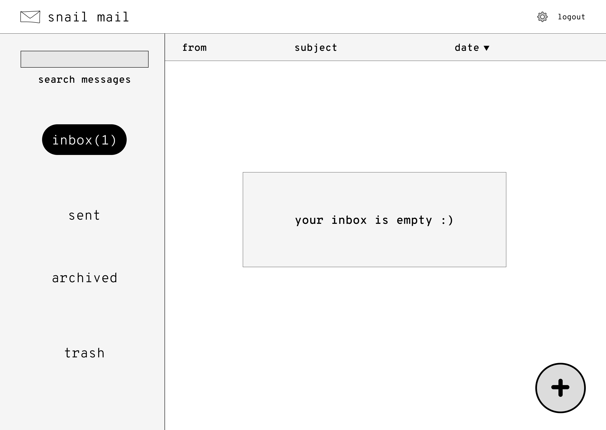

snail mail
2021
snail mail is a speculative design for a communication product that uses the timing of traditional, physical mail, for delivery.
Instead of the near instantaneous delivery of a text, an email, a slack message, snail mail, as the name might suggest, is all about slowness.
Maybe while reading this, your phone has buzzed or vibrated or you got a desktop notification or some other alert signaling that a person, or a company or a bot, has communicated something to you.While quick communication facilitates all sorts of great (and important!) things, a lot of our communication doesn't need to compete for our immediate attention.


Some examples of snail mail's UI
Drawing from the late 90s/early 00's aesthetic, snail mail hints at a time when the immediacy of the internet was not taken for granted (anyone who had dial up would understand...)
Looking to AOL and other 90s user interfaces as inspiration
snail mail also looks to light phone as an example of light weight UIs - just the essentials without feature bloating or overboard UIs.
While snail mail currently lives primarily in a figma file, the skeleton of code lives on github and will be finished....one day.